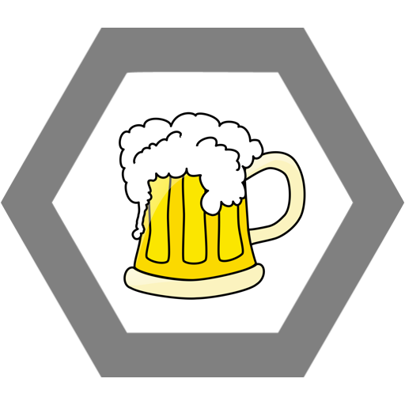

Kokova neukojitelná touha, ať už po zrzkách, alkoholu, návykových látkách či naprosto dementních videích na YouTubu z Koka dělá jednu ze všech nejpodivnějších postaviček a skřítků v maturitním ročníku Nového PORGu.

Miss Vogue
Koko je bytost alternativní, nezaškatulkovatelná. Jeho mimikry proto tvoří co nejpodivnější styl oblečení, který když se spojí s jeho namaštěnými nemytými vlasy, způsobí jeho nadpřirozeně nepřirozený zjev neviditelnost na 30 vteřin.
Tráfa NAHNED!!!
Koko pošle zprávu svým spojencům z předaleké Libně a sejde se s nimi ve své letité skrýši v Dobré Trafice. V tý v Korunní, samozřejmě! Tam je na 20 vteřin imunní nepřátelským spellům. Slečna Ivetka mu dodává HP.
Kolik je hodin? Chlastáme!
Koko se začne nalejvat IPAma. Z blahodárných moků načerpá dvojnásobek síly svého oponenta. Každá IPA navíc má šanci způsobit, že se ti Koko vybleje do levandulí. AOE 10 metrů, damage 20.
KoKoKoktejly
Nikdo neví jak to dělá, ale v KoKoKoktejlech se za použití stejných ingrediencí vždy objeví dvojnásobný obsah alkoholu v porovnání s normou ISO. Šance na omámení oponenta 150%.

Ulti
To je úlet, huehuehue!!! Kdykoliv má Koko potřebu obránit své teritorium před potenciálními vetřelci, vypustí ze sebe křik o frekvenci 1000 Hz, kterým se snaží protivníka zahnat. Koko má 1/3 šanci, že zařve „Když to rozpulíš, tak je to jak veverka“ – stun 2/s, mental damage 20, 1/3 šanci že zařve „Pane prosím, mám žízeň velkou!“ – Fear 5/s , mental damage 20, a 1/3 šanci, že zařve „Chodíme spolu do ústavu, pomáháme si“ - mental damage 60.